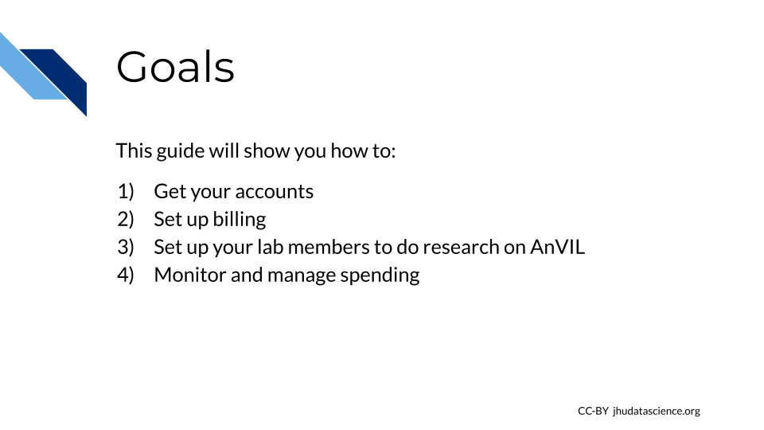
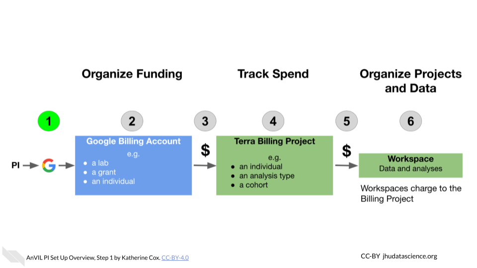

Chapter 2 PIs and Lab Managers
2.1 Introduction
2.1.1 Who is this guide for?
2.1.2 What’s in this guide?
2.1.3 Philosophy
2.2 Account Setup
This guide provides an opinionated walkthrough on how to set up AnVIL for your lab, based on experiences from many labs actively using AnVIL. Following our recommendations will help you configure your team so that you can more clearly see where charges are coming from and have greater control over which users can spend your money and access your data.
2.2.1 Goals for this guide

2.2.2 Overview
AnVIL uses Terra to run analyses. Terra operates on Google Cloud Platform, so you’ll pay for all storage and analysis costs through a Google account linked to Terra. The costs are the standard Google Cloud Platform fees for storing and moving data as well as executing an analysis. These costs are passed along through Terra without any markup.

- Create a Google account
- Set up Google Billing (and claim your free credits!).
- Add an administrator or viewer (optional)
- Link Terra to the Google Billing Account
- Create Terra Billing Projects
- Set budgets and alerts (optional, but highly recommended)
- Add users and Workspaces
2.2.3 Lab Management Roles
While there are many ways to configure your lab, this guide defines the following roles and responsibilities:
PI - The PI sets up the lab’s Google Cloud Account, creates its Google Billing Account(s), and Google Payment Method(s), links Terra with GCP, and invites Lab Managers to be Google Cloud “Billing Account Users.”
Lab Manager (Optional) - A Lab Manager creates or clones Terra Workspaces and manages who can use those Workspaces. The Lab Manager is also responsible for creating one or more Terra Billing Projects configuring GCP budgets and alerts. Importantly, lab managers control who can spend lab money and should have an understanding of Google Cloud Billing and Terra Billing Projects. Depending on your lab, the PI may choose to be the only Lab Manager, or may appoint trusted lab members to assist.
Data Analyst - A lab member who is granted write + can-compute access on one or more Terra workspaces by a Lab Manager and who will run analyses in Terra. Data Analysts cannot share Terra Workspaces (this prevents them from enabling others to spend lab money).
2.2.4 Before you start
- You will need a credit card or bank account to activate your free trial and get started. Don’t worry! You won’t be billed until you explicitly turn on automatic billing, but payment information is needed for verification purposes.
- Before setting up billing yourself, you may want to check with your institutional procurement office and see if they have a preferred account set-up method with Google (such as a third party reseller or an existing account).
- To add lab members, you will need to know the Google account they will use to access Terra. You can complete most setup steps without this information and then add them once you know the correct accounts.
2.2.5 Step 1: Create a Google Account

Terra operates on Google Cloud Platform, so you will need a (free) Google account which will allow you to
- Access the Terra platform to manage team members, data, and analyses
- Access Google Cloud Platform to manage billing
- Receive alerts when spending reaches specified thresholds
If you do not already have a Google account that you would like to use for accessing Terra, create one now.
If you would like to create a Google account that is associated with your non-Gmail, institutional email address, follow these instructions.
2.3 Learning Objectives
This chapter will cover:
- {You can use https://www.bu.edu/cme/forms/RSS_forms/tips_for_writing_objectives.pdf to define some learning objectives here}
- {Another learning objective}